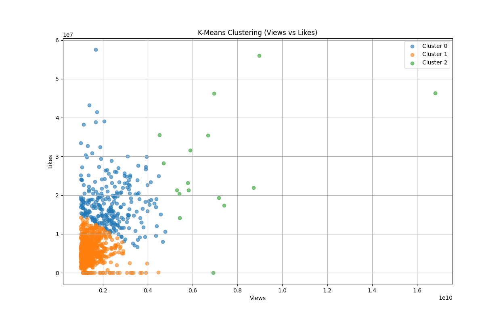
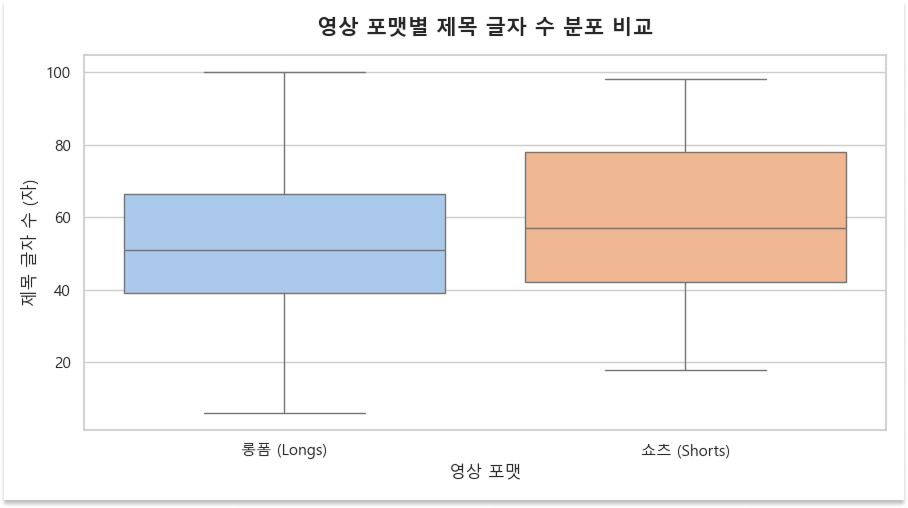
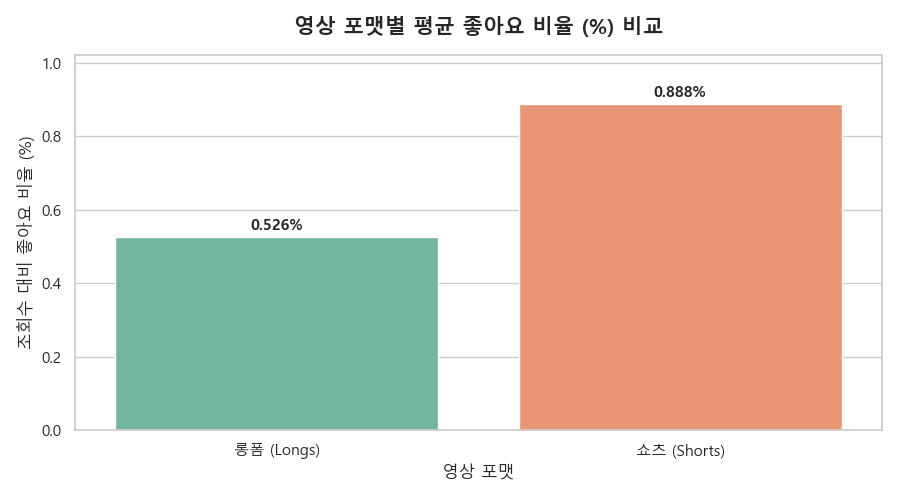
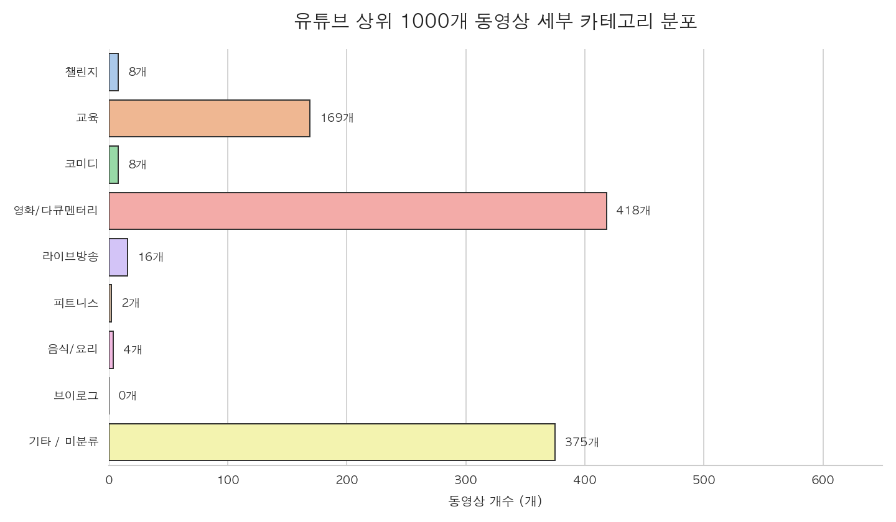
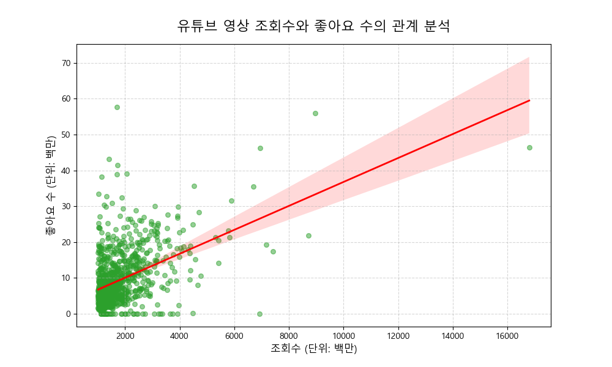
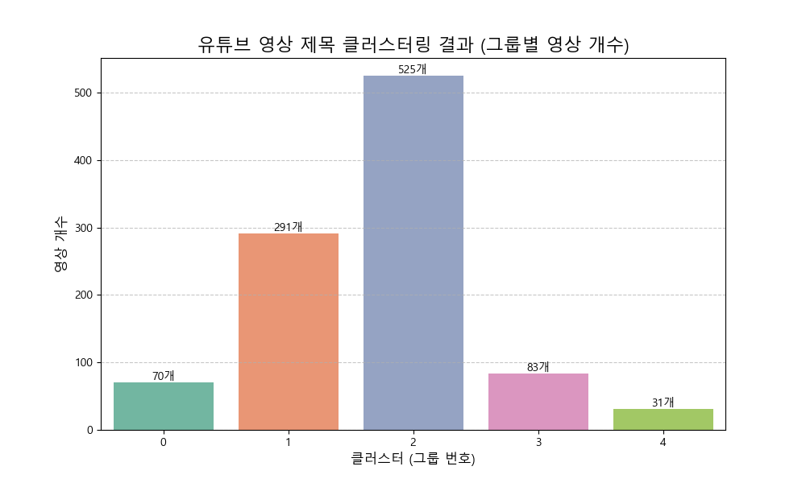

1000개의 YouTube 영상 데이터를 활용한 데이터 시각화 보고서

조회수와 좋아요 수 데이터를 숫자로 변환·표준화한 뒤 K-Means 군집화를 적용하여 유사한 영상들을 그룹화하고, 결과를 출력 및 시각화
유튜브 데이터의 조회수·좋아요 수를 숫자로 변환하고 영상 포맷을 한글로 정제한 뒤, 쇼츠와 롱폼의 제목 길이 분포와 평균 좋아요 비율을 그래프로 비교 분석

유튜브 영상 제목의 키워드를 기반으로 8개 카테고리로 재분류하고, 결측치를 포함한 1,000개 전체 데이터를 반영해 카테고리별 분포를 막대그래프로 시각화
유튜브 조회수와 좋아요 수를 실제 숫자로 변환해 상관관계를 분석하고, 추세선이 포함된 산점도로 시각화
유튜브 영상 제목을 TF-IDF로 수치화한 후 K-Means 군집화로 5개 그룹으로 분류하고, 각 그룹의 영상 수를 막대그래프로 시각화